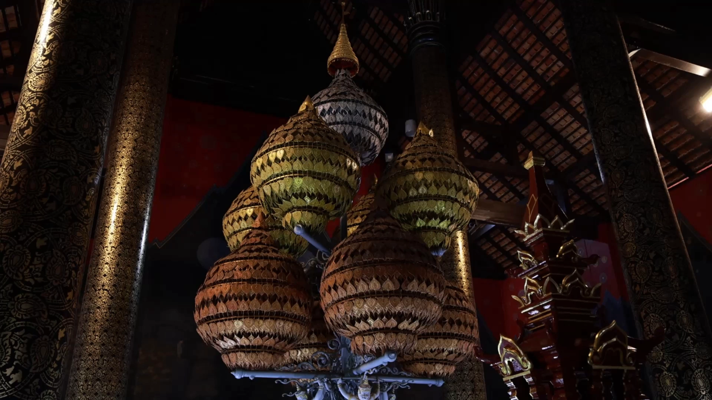

01 / WITHIN THE PAVILION
INTERIOR · ความงามภายใน
ความงาม
ที่เริ่มต้นจากภายใน
สำรวจลวดลาย ศิลปกรรม และองค์ประกอบตกแต่งภายในหอคำหลวง ก่อนการเดินทางเปิดเผยทัศนียภาพด้านนอก
เลื่อนลงเพื่อเคลื่อนกล้องและข้อความ

INTERIOR · ความงามภายใน
สำรวจลวดลาย ศิลปกรรม และองค์ประกอบตกแต่งภายในหอคำหลวง ก่อนการเดินทางเปิดเผยทัศนียภาพด้านนอก
EXIT · จากภายในสู่ภายนอก
ซ่อนการกลับทิศกล้องด้วยรายละเอียดไม้แกะสลัก แล้วเคลื่อนผ่านช่องประตูออกสู่แสงธรรมชาติอย่างต่อเนื่อง
EXTERIOR · หอคำหลวงและพื้นที่โดยรอบ
ใช้แสงบริเวณประตูพรางการเปลี่ยนมุมกล้อง แล้วค่อย ๆ ถอยออกเพื่อเผยอาคารทั้งหลังและพื้นที่สีเขียวที่โอบล้อม
ภาพและข้อความจะเลื่อนผ่านไปพร้อมกัน
เว็บตัวอย่างนี้ใช้ภาพ 92 เฟรมควบคุมด้วย Scroll แทนโมเดลสามมิติจริง โดยมีกลวิธีเปลี่ยนทิศทางแบบซ่อนจุดตัดภาพ 2 ครั้ง ข้อความทั้งหมดอยู่ในหน้าเว็บที่เลื่อนตามปกติ ขณะที่ฉากภาพอยู่ด้านหลัง
หมายเหตุ: สถาปัตยกรรมและภูมิทัศน์ในภาพเป็นแบบจำลองเพื่อทดสอบจังหวะกล้อง ไม่ใช่ภาพอาคารจริง